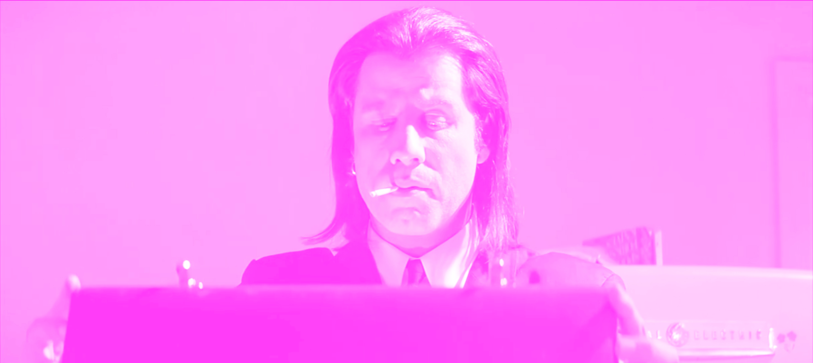
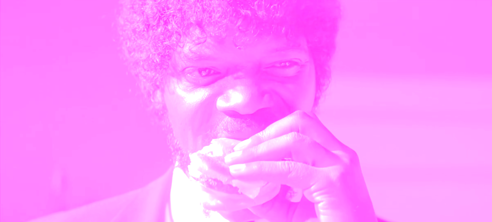
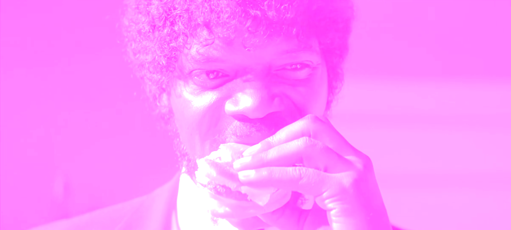

What makes the films of
Quentin
Tarantino
so special?
"I Steal"
from every single movie ever made
In a 1994 interview with Empire magazine, Tarantino said, "I steal from every single movie ever made." Tarantino's visual references to movies have become his trademark.
Some of these references are merely hinted at, while others are almost identical replications. For this reason, he's been the center of controversy for many years.
1
In Pulp Fiction the mysterious briefcase that Jules and Vincent collect and bring to Marsellus Wallace. We never see what’s inside the briefcase, but anyone who opens it is illuminated by a golden glow as they stare inside it in awe. This is a reference to the mysterious box at 'Kiss Me Deadly' the classic 1955 film noir. Everyone has their own theory on what’s in the briefcase.
The Warriors | Pulp Fiction
Walter Hill’s cult classic 'The Warriors' has provided inspiration for a number of modern genre filmmakers. Quentin Tarantino is clearly among them, as he imitates a couple of shots from The Warriors in Pulp Fiction: a closeup of a character’s lips as they speak into a microphone.
The Flinstones (1960-66) | Pulp Fiction (1994)
This scene is a reference to the opening scene in the 1966 film "The good, the bad and the ugly".
Jules and Vincent let themselves in and during the interrogation, Jules begins to eat Brad's food, "hmm, that is a tasty burger!" and later, shoots him dead.
and during the interrogation, Jules begins to eat Brad's food, "hmm, that is a tasty burger!" and later, shoots him dead.
Angel eyes enters stevens's home uninvited and begins interrogating him. We see Angel Eyes eating stevens's food, and after he gets the name he's looking for, he also shoots him dead.
The shot through Butch’s windshield of Marsellus Wallace crossing the street and turning to face the driver is taken straight from Alfred Hitchcock’s Psycho.
Instead of keeping his cool like Marion did, Butch slams down on the gas and runs Marsellus over, leading to an intense action scene.


MOTHER FUCKER